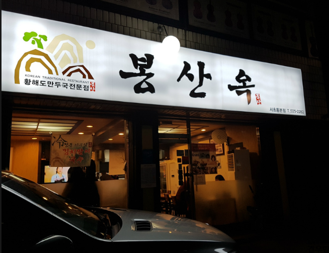
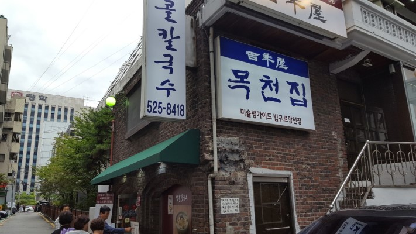

한식
|  |
봉산옥
📞 02-525-2282 🚩서울 서초구 반포대로8길 5-6 🕒 매일 11:00 - 22:00 🍴 봉산 만두국: 10,000원 |
|  |
목천집
📞02-525-8418 🚩서울 서초구 효령로52길 69 🕒 매일 11:00 - 21:00 🍴 옛날 칼국수: 8,000원 |
|
백년옥
📞02-523-2860 🚩서울 서초구 남부순환로 2407 🕒 평일 10:00 - 21:00 🍴 자연식 순두부: 10,000원 |

|
장꼬방묵은김치찌개전문
📞02-522-0035 🚩서울 서초구 효령로 364 🕒 매일 10:00 - 23:00 🍴 장꼬방찌개: 8,000원 |